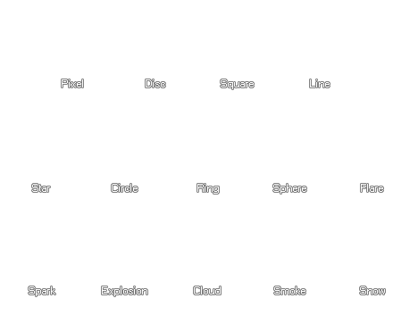

Les particules sont les effets graphiques qui peuvent être créés par l'utilisation de systèmes de particules dans un jeu. Les particules que vous définissez en utilisant ces fonctions peuvent être utilisées dans n'importe quel système que vous créez et la procédure normale consiste à définir toutes vos particules une fois au début d'une partie et à stocker leurs valeurs d'index dans des variables globales. Ces variables globales peuvent ensuite être utilisées pour éclater, émettre ou créer des particules à tout moment du jeu. Vous pouvez également créer, utiliser et détruire des particules si nécessaire si la mémoire est un problème ou si vous souhaitez de nombreux types différents, mais seulement à des points spécifiques de votre jeu. Quoi que vous choisissiez, les particules sont une ressource très polyvalente!
Les particules doivent être créées et leur index doit être stocké dans une variable afin que toutes les autres routines de particules puissent y accéder correctement. Les fonctions suivantes sont utilisées pour créer, vérifier, effacer et détruire les types de particules:
Une fois que vous avez créé votre type de particule, vous devez lui donner une forme. Cela peut être l'une des 14 formes intégrées qui sont des sprites de 64x64 pixels avec alpha-blending, ou vous pouvez utiliser vos propres sprites qui peuvent être animés, statiques ou utiliser des sous-images aléatoires. Les fonctions suivantes définissent la forme de base visuelle de chaque particule:
L'image suivante montre les 14 types de particules intégrés que vous pouvez choisir: 
Une fois que vous avez choisi l'image-objet pour le type de particule (soit une forme par défaut ou la vôtre), vous pouvez indiquer la taille et l'échelle de celle-ci. La taille peut être spécifiée en tant que plage et toutes les particules seront créées avec une taille choisie dans la plage donnée. L'échelle est la valeur "de base" pour l'échelle de l'axe des x et des y de la particule avant que toutes les variations de taille ne soient ajoutées et les fonctions suivantes sont utilisées pour contrôler ces valeurs:
Les particules peuvent également avoir une orientation et un mouvement. Comme avec la plupart des fonctions de particules, la vitesse, la direction et l'orientation sont résolues comme une valeur aléatoire qui est sélectionnée dans une plage donnée et peut être définie avec les fonctions suivantes:
Une fois que vous avez trié le style et le mouvement de vos particules, vous pouvez définir leur couleur et leurs valeurs alpha, qui peuvent toutes deux être définies comme une valeur absolue pendant toute la durée de vie de la particule ou comme une échelle de valeurs l'un à l'autre progressivement. Notez qu'il existe aussi une fonction spéciale qui vous permet de définir le mélange des particules et de leur environnement, et cela peut être normal ou additif et donne des effets fantastiques. Les fonctions qui régissent la couleur, l'alpha et le blending sont:
Les particules existent à l'écran pour une durée limitée et c'est ce qu'on appelle leur "durée de vie". Les durées de vie des particules sont mesurées par étapes et (comme les fonctions précédentes), elles sont exprimées comme une plage de valeurs à partir de laquelle la particule aura une durée de vie spécifique. Il y a aussi quelques fonctions intéressantes qui peuvent être utilisées pour que les particules génèrent d' autres particules, soit à chaque étape, soit lorsqu'elles "meurent" (ie: sont retirées de l'écran), mais attention à ces fonctions car elles peuvent créer rapidement des milliers de particules et planter le jeu! Les fonctions qui définissent la durée de vie et le pas ou la mort sont les suivantes:
Il est à noter que la création de particules par le biais du code peut souvent être un processus laborieux et fastidieux en raison du grand nombre de paramètres qui peuvent être modifiés et modifiés. Pour cette raison, il est recommandé de chercher autour de vous et d'obtenir un certain type de concepteur de particules (ou en faire un vous-même!) Pour éliminer la corvée de la création de particules.